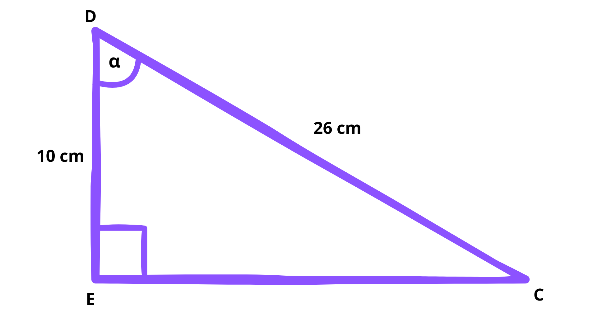

Pendahuluan
Mari Mengingat!
A. Menentukan Nilai Perbandingan Trigonometri
Seret dan Letakkan box yang ada di bagian kanan, ke tempat jawaban yang ada di bagian kiri!
Sebuah segitiga siku-siku memiliki panjang sisi seperti pada gambar berikut ini:
Nilai perbandingan sin θ, cos θ, dan tan θ dari segitiga siku-siku di atas adalah...
\(sin\) \(\theta = \)
\(cos\) \(\theta = \)
\(tan\) \(\theta = \)
Jawablah pertanyaan berikut ini pada tempat jawaban yang sudah disediakan!
Segitiga siku-siku CED memiliki sudut \(\alpha \) pada sudut CDE dan siku-siku di sudut E. Panjang sisi samping sudut alpha adalah 10 cm dan panjang sisi miringnya adalah 26 cm seperti pada gambar di bawah ini:
Isi jawaban yang benar:
B. Nilai Perbandingan Trigonometri pada Sudut-sudut Istimewa
Seret dan letakkan nilai yang sesuai ke dalam tabel di bawah ini.
| Perbandingan Trigonometri | 0° | 30° | 45° | 60° | 90° |
|---|---|---|---|---|---|
| \(sin\) \(\theta\) | |||||
| \(cos\) \(\theta\) | |||||
| \(tan\) \(\theta\) |
C. Memecahkan Masalah Kontekstual
Seorang petugas ingin mengukur tinggi sebuah menara. Ia berdiri sejauh 30 meter dari dasar menara dan mengarahkan alat pengukur sudut ke puncak menara dengan sudut 45°.
Berapa tinggi menara tersebut?
D. Mengingat Konsep Lingkaran Satuan
Lengkapilah kalimat berikut dengan memilih jawaban yang tepat!
Dalam trigonometri, lingkaran satuan didefinisikan sebagai lingkaran yang berpusat di dengan jari-jari sebesar 1 satuan. Setiap titik pada lingkaran ini merepresentasikan pasangan koordinat yang berkaitan dengan sudut tertentu. Nilai x dan y tersebut dapat dihubungkan dengan perbandingan trigonometri, di mana x merepresentasikan , y sebagai , dan jari-jari lingkaran (1 satuan) berperan sebagai .